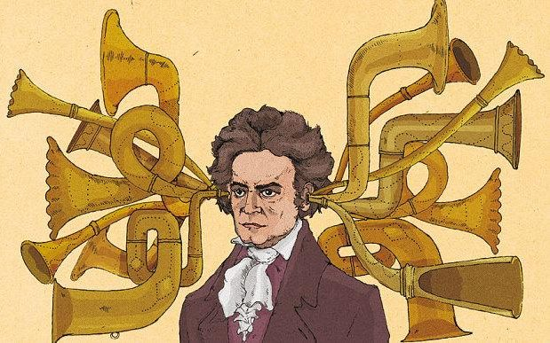

Open up some sort of Word Processor (MS Word, Google Docs, whatever. I don't care) and go ahead and type your name at the top. (Can't be forgetting that now, can we?)
You're going to be using the internet to research several questions, the answers to which you'll type up and then email to me whenever you finish. Some of the questions will be relatively easy, but some of them might require you to do quite a bit of thinking! HAVE FUN.
Question 1: When was Beethoven born?
Question 2: When did he die?
Question 3: How old was he when he died?
Question 4: When did Beethoven begin to lose his hearing and how old was he?
Question 5: Did beethoven ever lose his hearing completely? When did that happen?

The Heiligenstadt Testament
In 1802, Beethoven penned a letter that has come to be referred to as The Hieligenstadt Testament. It isn't incredibly long. Read it, and a bit of info about it and then answer the following questions.
Question 6: Why is it called the Heiligenstadt Testament? What's a Heiligenstadt, and what did Beethoven have to do with it? (i.e. why was he there??)
Question 7: To whom was this letter addressed?
Question 8: How did the recipients react when they got the letter?
Question 9: The letter opens like this: Oh you men who think or say that I am malevolent, stubborn, or misanthropic, how greatly do you wrong me? You do not know the secret cause which makes me seem that way to you. From childhood on, me heart and soul have been full of the tender feeling of goodwill, and I was ever inclined to accomplish great things. But, think that for six years now I have been hopelessly afflicted, made worse by senseless physicians, from year to year deceived with hopes of improvement, finally compelled to face the prospect of a lasting malady (whose cure will take years or, perhaps, be impossible) Put that into modern english.. your own words.
Question 10: In this sentence: for me there can be no relaxation with my fellow men, no refined conversations, no mutual exchange of ideas. I must live almost alone, like one who has been banished; I can mix with society only as much as true necessity demands. If I approach near to people a hot terror seizes upon me, and I fear being exposed to the danger that my condition might be noticed. Beethoven is saying that he gets really nervous when other people come around him... WHY?